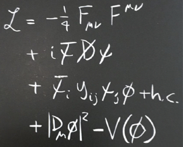

La maggior parte della mia attività di ricerca è dedicata allo studio del bosone di Higgs, della dinamica elettrodebole e di flavor nel Modello Standard e nelle sue estensioni. I miei interessi vanno dall'analisi teorica di teorie di nuova fisica ad argomenti più fenomenologici collegati agli esperimenti a collisori ed alla cosmologia.
Sono autore di diversi articoli sullo studio di teorie oltre il Modello Standard, con particolare focus su scenari basati su nuova dinamica fortemente accoppiata (modelli di Higgs composto). Uno dei miei risultati principali in questo contesto è l'identificazione di una forte correlazione tra la massa dell'Higgs, la presenza di partner del top leggeri e il livello di tuning necessario per ottenere uno scenario realistico di rottura della simmetria elettrodebole [1,2]. Questi risultati hanno conseguenze importanti dal punto di vista sperimentale, in quanto identificano i partner del top come canale privilegiato per testare un'ampia classe di modelli con Higgs composto mediante experimenti a collisori. Un altro risultato rilevante da me ottenuto è lo sviluppo del formalismo di teoria di campo effettiva per parametrizzare la fenomenologia dei partner del top [3]. Questo formalismo è attualmente utilizzato dalle collaborazioni ATLAS e CMS per riportare le misure di LHC su produzione singola di nuovi vector-like quark.
Oltre agli argomenti già menzionati, ho anche una rilevante produzione scientifica rivolta allo studio del Modello Standard e allo svipullo di test di nuova fisica indipendenti da modelli espliciti. In questo contesto, due miei risultati più rilevanti sono l'analisi dei self-coupling del bosone di Higgs a collisori attuali e futuri [4], e l'identificazione di strategie per migliorare la determinazione delle osservabili elettrodeboli all'LHC mediante lo studio della produzione Drell-Yan di una coppia di leptoni [5] e dei processi di produzione di una coppia di bosoni. Attualmente sono anche coinvolto in una linea di ricerca incentrata sull'uso di applicazioni di intelligenza artificiale per l'analisi dei dati sperimentali a collisori di particelle.
[1] O. Matsedonskyi, G. Panico and A. Wulzer, “Light Top Partners for a Light Composite Higgs”, JHEP 1301 (2013) 164 [arXiv:1204.6333 [hep-ph]].
[2] G. Panico, M. Redi, A. Tesi and A. Wulzer, “On the Tuning and the Mass of the Composite Higgs”, JHEP 1303 (2013) 051 [arXiv:1210.7114 [hep-ph]].
[3] O. Matsedonskyi, G. Panico and A. Wulzer, “On the Interpretation of Top Partners Searches”, JHEP 1412 (2014) 097 [arXiv:1409.0100 [hep-ph]].
[4] A. Azatov, R. Contino, G. Panico and M. Son, “Effective field theory analysis of double Higgs boson production via gluon fusion”, Phys. Rev. D 92 (2015) no.3, 035001 [arXiv:1502.00539 [hep-ph]].
[5] M. Farina, G. Panico, D. Pappadopulo, J. T. Ruderman, R. Torre and A. Wulzer, “Energy helps accuracy: electroweak precision tests at hadron colliders”, Phys. Lett. B 772 (2017) 210 [arXiv:1609.08157 [hep-ph]].
[6] R. Franceschini, G. Panico, A. Pomarol, F. Riva and A. Wulzer, “Electroweak Precision Tests in High-Energy Diboson Processes”, JHEP 1802 (2018) 111 [arXiv:1712.01310 [hep-ph]].
La scoperta del bosone di Higgs al collisore LHC al CERN nel 2012 [1] ci ha fornito l'ultimo mattone dell'edificio del Modello Standard. Ora abbiamo una teoria matematicamente consistente, le cui predizioni coprono un enorme insieme di situazioni sperimentali con buonissima precisione.
Tuttavia, non siamo ancora giunti alla fine della nostra esplorazione delmondo delle particelle elementari. Molte domande fondamentali rimangono ancora senza risposta nel Modello Standard, e forniscono una prova evidente della presenza di nuovi fenomeni ancora da scoprire e comprendere.
Molte questioni aperte sono connesse alla cosmologia. Un esempio è la materia oscura: un misterioso costituente dell'universo, che è cinque volte più abbondante della materia ordinaria. Sebbene negli anni si siano accumulati molti segnali indiretti della sua presenza, non sappiamo ancora molto della vera natura della materia oscura e della sua relazione con le particelle note del Modello Standard.
distribuzione dell'energia dell'universo
Una domanda ancora più profonda è legata alla descrizione fondamentale della gravità. La gravità è stata la prima forza ad essere scoperta, ma ancora oggi siamo limitati ad una sua formulazione all'interno di una teoria puramente classica. Questa descrizione è necessariamente incorretta ad energie sufficientemente alte, alle quali gli effetti quantistici diventano importanti. A queste energie si verificano nuovi fenomeni esotici, sui quali sappiamo poco o nulla.
Esiste anche un altro problema legato alla gravità. L'universo è pieno di una componente sconosciuta di energia, detta energia oscura. Questa energia causa un'espansione esponenziale dell'universo stesso. L'energia oscura costituisce il 73% dell'energia totale dell'universo e la sua origine è ancora completamente misteriosa.
Anche se limitiamo la nostra attenzione alle particelle conosciute del Modello Standard, diverse domande rimangono senza risposta. Per esempio, è accertato sperimentalmente che i neutrini hanno una massa piccolissima ma non esattamente nulla. Nel Modello Standard, però, essi sono descritti come particelle prive di massa. La soluzione di questo problema probabilmente richiederà una rivisitazione completa della natura dei neutrini, accompagnata da una serie di esperimenti necessari per identificare la corretta teoria che descrive queste particelle.
Un altro aspetto strano del Modello Standard è collegato ai costituenti della materia, ovvero i quark e gli elettroni. Gli esperimenti ci dicono che queste particelle sono accompagnate da due "copie" che hanno esattamente le stesse proprietà con l'eccezione di una massa maggiore. Questa struttura a "tre famiglie" (o "tre generazioni") è una peculiarità del Modello Standard che genera una ricca serie di profonde conseguenze fenomenologiche. Tuttavia la sua origine è ben lontana dall'essere compresa.
Concludiamo questa panoramica tornando al bosone di Higgs, che è stato il punto di partenza della nostra discussione. Il bosone di Higgs costituisce un unicum all'interno delle particelle del Modello Standard. È l'unica particella elementare attualmente nota che abbia spin zero. Questa proprietà lo rende mediatore di un nuovo tipo di forza, completamente diversa dalle altre forze note in natura (cioè dalle forze elettrodebole, forte e gravitazionale). Il bosone di Higgs è anche la sola particella elementare che può interagire con se stessa (con interazioni trilineari e quadrilineari), sebbene lo faccia così debolmente che queste interazioni non sono ancora state testate sperimentalmente.
La proprietà più notevole del bosone di Higgs, tuttavia, è il fatto che esso è legato ad un campo che permea tutto lo spazio e genera le masse di tutte le altre particelle elementari. Questo meccanismo, detto "meccanismo di Higgs", è uno dei pilastri del Modello Standard ed è essenziale per garantire la consistenza di tutta la teoria. La proposta teorica del meccanismo di Higgs risale al 1964 [2], quasi 50 anni prima della scoperta sperimentale del bosone di Higgs. Per questa ragione esso può essere considerato uno dei più spettacolari trionfi della fisica teorica.
Ciononostante, il bosone di higgs è ancora, per molti aspetti, un oggetto strano. Una sua caratteristica peculiare è il fatto che, sebbene sia responsabile per la generazione delle masse di tutte le altre particelle elementari, esso non generi la sua stessa massa. Dal punto di vista del Modello Standard, la massa dell'Higgs è un parametro libero, il cui valore non ha una spiegazione. Forti argomenti teorici (solitamente noti come "problema della gerarchia" o "problema della naturalezza") hanno portanto i fisici a pensare che il valore della massa dell'Higgs dovrà essere spiegato all'interno di qualche estensione del Modello Standard. Per questa ragione il bosone di Higgs potrebbe essere la nostra porta d'accesso privilegiata a fenomeni di nuova fisica.
[1] G. Aad et al. [ATLAS Collaboration],
“Observation of a new particle in the search for the Standard Model Higgs boson with the ATLAS detector at the LHC”,
Phys. Lett. B 716 (2012) 1
[arXiv:1207.7214 [hep-ex]]. S. Chatrchyan et al. [CMS Collaboration],
“Observation of a New Boson at a Mass of 125 GeV with the CMS Experiment at the LHC”,
Phys. Lett. B 716 (2012) 30
[arXiv:1207.7235 [hep-ex]].
[2] F. Englert and R. Brout,
“Broken Symmetry and the Mass of Gauge Vector Mesons”,
Phys. Rev. Lett. 13 (1964) 321.
P. W. Higgs,
“Broken Symmetries and the Masses of Gauge Bosons”,
Phys. Rev. Lett. 13 (1964) 508.
G. S. Guralnik, C. R. Hagen and T. W. B. Kibble,
“Global Conservation Laws and Massless Particles”,
Phys. Rev. Lett. 13 (1964) 585.

La nostra capacità di comprendere e descrivere i fenomeni naturali è in ultima istanza basata sulla costruzione di modelli matematici. Il linguaggio matematico ci permette di comprendere la natura sia al livello qualitativo sia, cosa ancora più importante, al livello quantitativo.
I modelli fondamentali della natura hanno due importanti caratteristiche: sono "economici" e "predittivi". Il termine "economici" si riferisce al fatto che teorie fisiche di successo forniscono una descrizione concisa della natura, nel senso che sono in grado di spiegare molti fenomeni apparentemente diversi in un quadro unificato. Per fare un esempio possiamo pensare alla teoria della gravitazione di Newton. Con una sola legge fisica, Newton fu in grado di spiegare il moto dei pianeti intorno al sole, il moto della luna attorno alla terra e la caduta dei gravi sulla terra. Un insieme ristretto di principi è sufficiente per spiegare tutto ciò che vediamo attorno a noi, e questa è la chiave per ottenere una comprensione profonda della natura.
la lagrangiana del Modello Standard
La seconda carettaristica fondamentale delle teorie fisiche è la loro capacità di essere "predittive". Questo significa che esse sono capaci di predire il risultato degli esperimenti e, in molti casi, di predire nuovi fenomeni che non sono ancora stati osservati. il linguaggio matematico permette ai fisici di ricavare dettagliate predizioni quantitative che possono essere confrontate in maniera oggettiva con i dati sperimentali in modo da poter essere confermate o falsificate.
Uno dei successi più spettacolari della fisica delle particelle è la costruzione del Modello Standard. Questa teoria descrive, con stupefacente accuratezza, quasi tutti i fenomeni che abbiamo osservato negli esperimenti di ficica delle particelle. Inoltre essa è così concisa che la sua lagrangiana completa può essere stampata su una maglietta (vegi foto). La lagrangiana del Modello Standard descrive le proprietà e il comportamento di tutte le particelle elementari che abbiamo scoperto sino ad oggi.
Come abbiamo già discusso, malgrado il suo successo, il Modello Standard non può essere considerato la teoria ultima della natura. Alcuni suoi punti deboli ci dicono che dobbiamo cercare una teoria più fondamentale, che estenda il Modello Standard incorporandone le caratteristiche di successo. Sfortunatamente non sappiamo che tipo di teoria prenderà il posto del modello Standard, e l'unico modo per scoprirlo è esplorare direzioni differenti confrontandole con i dati sperimentali.
La costruzione di nuove teorie oltre il Modello Standard costituisce l'approccio privilegiato per esplorare la nuova fisica in maniera sistematica. I nuovi modelli possono incorporare nuovi principi che offrono delle soluzioni per i punti deboli del Modello Standard. Inoltre essi individuano segnali plausibili di nuova fisica fornendo una guida per le ricerche sperimentali.
Nell'arco del secolo scorso è emerso un quadro molto convincente della fisica fondamentale, nel quale il comportamento delle particelle elementari è dettato da principi di simmetria [1]. Il Modello Standard è basato su un ampio insieme di simmetrie esatte ed approssimate, che costituiscono la chiave per il suo sucesso fenomenologico. La costruzione di nuove teorie spesso poggia sull'introduzione di nuovi principi di simmetria, che possono essere sfruttati per risolvere alcuni dei misteri del Modello Standard.
Negliultimi decenni, una direzione di ricerca particolarmente fruttuosa è stata lo studio di nuove teorie connesse col bosone di Higgs e col problema della naturalezza. In questo ambito, il concetto di supersimmetria -- una nuova simmetria dello spazio-tempo che estende la simmetria di Lorentz della relatività speciale [2] -- ha trovato una delle sua applicazioni naturali. Un altra idea che è emersa è legata ad una reinterpretazione del bosone di Higgs come un oggetto composto [3] formato da un insieme di costituenti più fondamentali. Questo fenomeno sarebbe analogo a ciò che succede per gli adroni (per esempio i protoni, i neutroni e i pioni) che sono formati di quark e gluoni.
Altre interessanti direzioni di ricerca nella costruzione di modelli sono legate al problema della materia oscura. È interessante menzionare che molti modelli pensati per risolvere il problema della naturalezza, come la supersimmetria o i modelli di Higgs composto, prevedono nuove particelle che possono costtuire la materia oscura. Un'altra possibilità è quella di legare la materia oscura alla cromodinamica quantistica (QCD), cioè alla teoria che descrive gli adroni e i loro costituenti (quark e gluoni). Un problema aparto della QCD (noto con il nome di "problema della violazione di CP forte") potrebbe essere risolto dalla presenza di una nuova particella ultra-leggera, l'assione [4], che potrebbe anche costituire la materia oscura.
[1] Un'introduzione pedagogica al concetto di simmetrie in fisica può essere trovata su Wikipedia.
[2] Un'introduzione pedagogica alla supersimmetria può essere trovata su Wikipedia.
[3] Un'introduzione pedagogica ai modelli di Higgs composto può essere trovata su Wikipedia.
[4] Un'introduzione pedagogica all'assione in QCD può essere trovata su Wikipedia.

I collisori di particelle, come l'LHC al CERN, costituiscono una opportunità unica per ottenere una comprensione più profonda del Modello Standard e per cercare segnali di nuova fisica. Un aspetto complicato di questi esperimenti è dato dalla enorme quantità di dati che devono essere analizzati. Per poter essere sfruttati in modo ottimale, questi dati richiedono lo sviluppo di strategie di ricerca molto avanzate.
Segnali interessanti e osservabili rilevanti per la ricerca di nuova fisica sono spesso difficili da identificare poiché sono nascosti da un'enorme quantità di processi di background. Le tradizionali procedure di analisi richedono tipicamente di essere studiate caso per caso, con il rischio concreto di essere lontane dalla sensitività ottimale. Inoltre segnali inattesi o "strani" potrebbero passare inosservati se la strategia di analisi non è abbastanza flessibile.
Nuovi approcci basati sull'intelligenza artificiale hanno la potenzialità di risolvere tutti questi problemi, fornendo strumenti ottimali per estrarre informazione dai dati sperimentali. Molte applicazioni di intelligenza artificiale sono attualmente oggetto di sviluppo, grazie agli sforzi coordinati di diversi gruppi di ricerca in tutto il mondo.
Una direzione di ricerca in rapida crescita è quella focalizzata all'ottimizzazione delle ricerche per segnali di nuova fisica. L'obiettivo principale di questi sforzi è lo sviluppo di reti neurali artificiali che siano in grado di modellizzare con alta precisione i segnali attesi di nuova fisica, permettendo così una interpretazione globale e completa dei dati da cllisori di particelle. Per alcuni lavori in questa direzione si vedano ad esempio [1,2].
[1] J. Brehmer, K. Cranmer, G. Louppe and J. Pavez, "Constraining Effective Field Theories with Machine Learning", Phys. Rev. Lett. 121 (2018) no.11, 111801 [arXiv:1805.00013 [hep-ph]];
Phys. Rev. D 98 (2018) no.5, 052004 [arXiv:1805.00020 [hep-ph]].
[2] S. Chen, A. Glioti, G. Panico and A. Wulzer, "Parametrized classifiers for optimal EFT sensitivity", JHEP 05 (2021) 247 [arXiv:2007.10356 [hep-ph]].
Sono autore di 37 lavori di ricerca pubblicati su riviste internazionali con peer review e di 8 proceeding relativi a seminari presentati a conferenze internazionali. Ho scritto una monografia pubblicata nella serie Lecture Notes in Physics da Springer, che ha ricevuto 390+ citazioni. Ho anche contribuito a 10 report scientifici.
La lista completa delle mie pubblicazioni può essere reperita su InspireHep.
Pubblicazioni selezionate
Ho tenuto 50+ seminari a conferenze internazionali e sono stato invitato a tenere 30+ seminari ad università ed istituti di ricerca.
Selezione di seminari
INFN privacy policy information